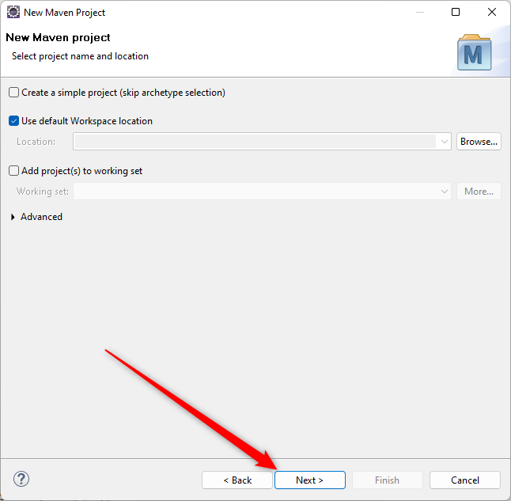

Окно, которое нам открывается на следующем шаге, выглядит вот так:
И ОНО ДЕЙСТВИТЕЛЬНО БЕСПОЛЕЗНОЕ!
То есть, ваши действия в этом окне никак не повлияют на процесс создания Maven Web проекта, а, может быть, еще и навредят этому процессу, если вы начнете очень уж активно нажимать всякие кнопочки на нем.
Поэтому лучшее, что можно сделать в этом окне:
Нажать кнопку Next > и перейти к следующему шагу упражнения.
Но если вдруг у вас много свободного времени и много любопытства, то вы можете задержаться глазами на этом окне и попытаться понять, что же оно нам предлагает.
Надо написать про это окно подробнее, но уже сейчас видно (и было видно всегда), что это окно - полное говно. Если все же напишешь описание, не забудь вставить видео из ДМБ про полное говно.